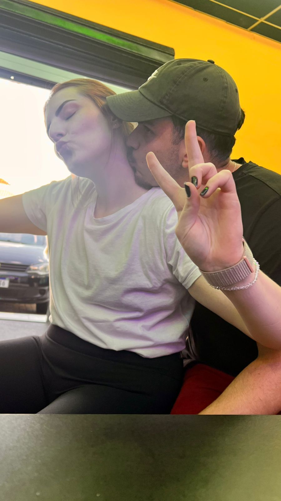
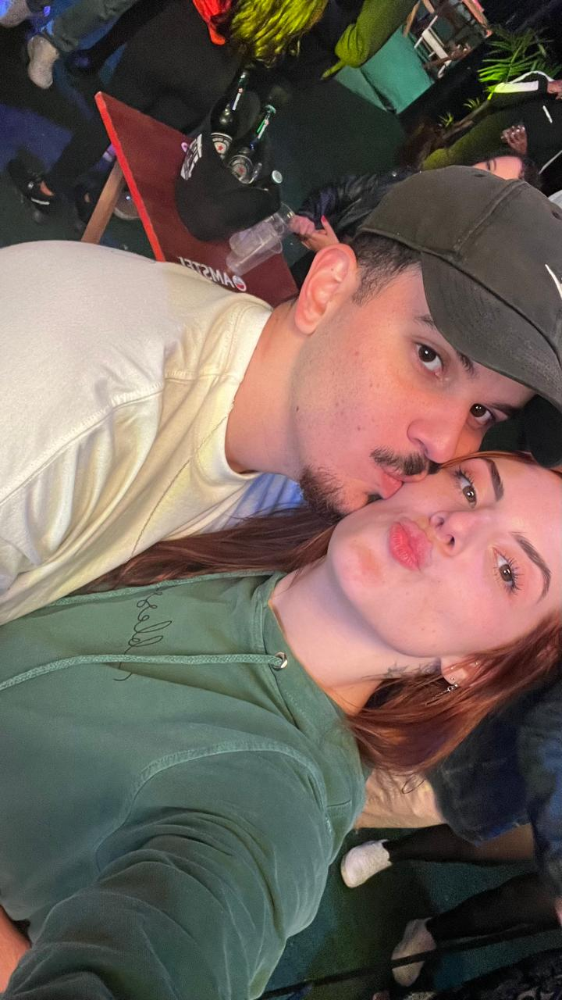
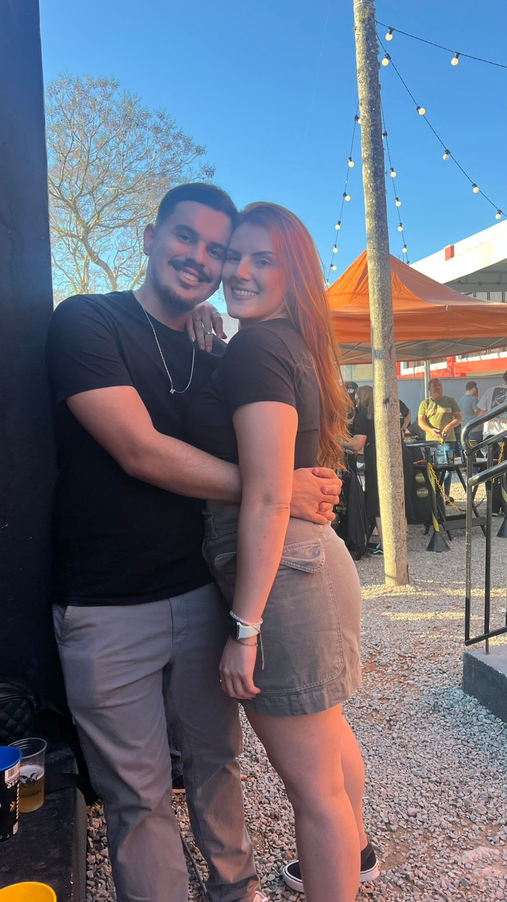

¡Bom, para iniciarmos de verdade tudo! espero que goste❤️❤️.....

AMOR DA MINHA VIDA❤️

ESSE DIA VAMOS LEMBRAR PARA SEMPRE : .
Essa "cartinha" vai ser um pouco diferente tá? Agora podemos dizer que realmente é o começo do seu presente do nosso dia. Pode parecer simples no começo mas creio que você vai enxergar o verdadeiro significado disso tudo tá? Resolvi nesses dois primeiros dias focar em fazer uma coisa que você amou tanto, que como você mesmo já disse que foi a sua cartinha preferida, a sua primeira cartinha! E quem poderia imaginar que depois daquelas minhas palavras tudo mudaria entre a gente, que finalmente depois de eu conseguir te mostrar o quanto você já era especial para mim em tão "pouco" tempo nós so fomos nos conectnando mais e mais e estamos aqui agora. Na sua o que? 21378 cartinha? Kkkkkk confesso que dessa parte eu não sei ao certo quantas tem mas eu sei que tem muitas já!!!!
Minha ruivinha maravilhosa❤️

Para sempre nós.
Fazendo essa e a outra confesso que estava enferrujado demais bichola kkkkk e talvez por vários momentos em que pensei de fazer isso para você eu mesmo duvídei que era capaz mas efim estou aqui tentando ao máximo fazer tudo bonitinho tá? Mas vamos lá, se eu fosse escrever, falar, tudo o que eu quero te falar você iria ganhar o maior pergaminho já existente nesse mundo, ai eu pensei "bom se ela não está com quase nada de paciência comigo como que eu vou entregar uma biblía escrita para ela" ai eu falei opa, vou separar tudo o que eu quero em seis partes, ai ela pode ir dividindo durante os dias e não vai ficar pesado.
...
E bom, acho que nesse nosso mês nós dois passamos por muitas e muitas coisas. Se falarmos que foi facíl estaremos mentindo e muito ainda mas conseguimos e estamos passando por tudo juntos! Estamos no nosso 100% já? Longe disso mas sei que cada dia que passa vamos aumentando mais, e mais essa nossa porcentagem. E com tudo isso que estou preparando para você eu quero mostrar além do nosso amor gigantesco, que eu estou melhorando, que cada dia que passa eu estou evoluindo como pessoa, como homem, como filho e principalmente, como um marido seu que vou ser no futuro! E esse está sendo o meu maior desafio até agora, eu não quero parar em nenhum momento de melhorar e quero que isso seja para sempre, que cada dia que passe eu possa ser mais capacitado para te dar um futuro gigantesco lá na frente, um futuro para a nossa familía. E ultimamente eu só ando buscando isso mesmo, "moer" como os piões falam la na linha kkkkk durante a semana e final de semana aproveitar com você, curtir cada segundo ao seu lado, aproveitar cada carinho que me dá, ouvir cada palavra sua por que antes desse mês eu já sabia como era bom isso, mas depois de tudo o que aconteceu, dos vazios IMENSOS que foram os meus dias sem você eu nunca mais quero perder cada segundo ao seu lado.
Eu nunca mais quero perder algum momento com você...
E se você tiver noção de cada coisa que estou planejando para nós você já vai ficar com frio na barriga de ansiedade kkkkkk, acho que nunca é tarde para começar alguma coisa, eu quase me matei com tudo o que aconteceu mas graças a Deus, ele te fez me dar outra chance então era óbvio que iria começar tudo aquilo que eu apenas falava. E com isso, te fazer feliz todos os dias possiveis, não vou mentir, é claro que eu já queria voltar a ouvir um "boa noite amor, eu te amo muito", que eu queria ouvir cada migalha do que acontece no seu dia, que eu queria poder te abraçar e dar um beijinho na sua testa todos os dias a noite além de muitas e muitas outras coisas, mas sei também que tenho que respeitar esse seu momento, de que de pouco em pouco tudo isso vai voltar, que eu vou voltar a ter a minha ruivinha diariamente 100% presente na minha vida. E calhou que por uma memória do google fotos me fez lembrar do que é esse 24/03 para você, sempre tive muito medo e muita cautela com tudo isso, pode perceber que eu pergunto as coisas bem de vez enquando apesar de você já ter me dito que ama falar sobre o que o dodô era então deixando esse meu medo de lado, vou falar o que eu sempre quis falar dele ná próxima página, então eu me despeço aqui das minhas palavrar e volto amanhã com mais um presente. EU TE AMO MUITO JULIA CRIVELLARO!!!!!!
Dodo

Eu nunca imaginei na vida que eu sentiria tanto um dia sem mesmo nunca ter trocado uma palavra com essa pessoa, tudo o que remete o seu pai me deixa com um aperto no coração assim sabe? E toda vez que alguém fala dele, toca no nome dele eu paro tudo para ouvir. E por que eu sinto isso? Acho que uma parte é por que o brilho no seu olhar quando fala dele, o tom doce da sua voz quando fala dele, tudo o que você demonstra quando fala dele eu vejo muito raramente em você. É de uma leveza, de um amor, de um brilho que deixa o meu coração tão quentinho, que se eu pudesse perguntar eu gostaria de saber cada história que você viveu com ele. Não sei se você vai acreditar nisso mas estou chorando escrevendo essa parte, de tudo o que eu já escutei do dodo eu não consigo não imaginar o quanto eu e ele nos dariamos bem, é claro que você fala que se ele visse algumas coisas que eu faço ou que eu não sei fazer que ele ficaria com vergonha, mas isso é o de menos, eu não consigo não imaginar o quanto eu e ele seriamos amigos kkkkk, tentei fazer com o pouco que eu tenho dele essa foto nossa com a IA, para ter um gostinho de como seria, eu uso com maior orgulho e alegria aquele broche dele de nossa senhora aparecida e cada pessoa que pergunta da onde ele é eu falo que era do seu pai, cada noite que eu durmo com a camiseta da oficina dele além de ter uma coisa que me lembra você a noite tem a parte que eu lembro dele. Só depois do que passei com a minha vó eu consigo entender a dor que é perder uma pessoa dessa significancia, eu sei que esse dia e o dia do falecimento dele é muito pesado para você, mesmo que você não fale ou demonstre tanto eu te conheço muito bem para saber disso, e se minhas palavras tem algum poder sobre você leia isso aqui com carinho agora: Se tem uma pessoa que tenho 100% de certeza que se orgulha de tudo de você é ele la do céu, desde a nossa primeira conversa você falava da sua cnh, que era o sonho do seu pai te ver dirigindo e agora ele tem a melhor visão sobre isso, o quanto ele deve ter soltado fogos quando você finalmente comprou o seu kazinho não está escrito!!!! Fora o que ele acompanha de você sendo enfermeira, de você ajudando cada pessoa que consegue, você brinca que trata melhor os seus pacientes do que nós e esta tudo bem isso, se cada pessoa que está passando por um momento dificíl tivesse o poder de ouvir sua voz e te olhar tenho certeza que o mundo estaria muito melhor e tenho certeza que ele se orgulha muito disso. Estou aqui para ouvir tudo de você, e caso você queira contar mais e mais histórias sobre ele saiba que eu ficaria muito feliz tá? Enfim, se eu pudesse ter a oportunidade de conversar 24h com ele pode ter certeza que seriam uma das melhores horas da minha vida!
.jpeg)
.jpeg)
.jpeg)